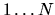

| 8 Queens Chess Problem |
In chess it is possible to place eight queens on the board so that no one queen can be taken by any other. Write a program that will determine all such possible arrangements for eight queens given the initial position of one of the queens.
Do not attempt to write a program which evaluates every possible 8 configuration of 8 queens placed on the board. This would require 88 evaluations and would bring the system to its knees. There will be a reasonable run time constraint placed on your program.
To standardize our notation, assume that the upper left-most corner of the board is position (1,1). Rows run horizontally and the top row is row 1. Columns are vertical and column 1 is the left-most column. Any reference to a square is by row then column; thus square (4,6) means row 4, column 6.
Each dataset is separated by a blank line.
Each solution will be sequentially numbered . Each solution will consist of 8 numbers. Each of the 8 numbers will be the ROW coordinate for that solution. The column coordinate will be indicated by the order in which the 8 numbers are printed. That is, the first number represents the ROW in which the queen is positioned in column 1; the second number represents the ROW in which the queen is positioned in column 2, and so on.
The sample input below produces 4 solutions. The full 8 8 representation of each solution is shown below.
8 representation of each solution is shown below.
SOLUTION 1 SOLUTION 2 SOLUTION 3 SOLUTION 4 1 0 0 0 0 0 0 0 1 0 0 0 0 0 0 0 1 0 0 0 0 0 0 0 1 0 0 0 0 0 0 0 0 0 0 0 0 0 1 0 0 0 0 0 0 0 1 0 0 0 0 0 0 1 0 0 0 0 0 0 1 0 0 0 0 0 0 0 1 0 0 0 0 0 0 1 0 0 0 0 0 0 0 0 0 0 0 1 0 0 0 0 0 0 0 1 0 0 0 0 0 0 0 1 0 0 0 0 0 1 0 0 0 0 1 0 0 0 0 0 0 0 0 0 0 1 0 0 0 1 0 0 0 0 0 0 0 0 0 0 0 0 0 1 0 0 0 0 0 0 1 0 0 0 1 0 0 0 0 0 0 0 0 1 0 0 0 0 0 1 0 0 0 0 0 0 0 0 0 1 0 0 0 0 0 0 0 0 0 0 1 0 0 0 0 0 0 1 0 0 0 0 0 0 1 0 0 0 0 1 0 0 0 0 0 0 0 1 0 0 0 0 0 0 0 0 1 0 0 0 0 0 0 0 1 0 0 0 0 0 0 0 0 0 1 0 0 0 0 0 0 1 0 0 0 0
Submit only the one-line, 8 digit representation of each solution as described earlier. Solution #1 below indicates that there is a queen at Row 1, Column 1; Row 5, Column 2; Row 8, Column 3; Row 6, Column 4; Row 3,Column 5; ... Row 4, Column 8.
Include the two lines of column headings as shown below in the sample output and print the solutions in lexicographical order.
Print a blank line between datasets.
1 1 1
SOLN COLUMN # 1 2 3 4 5 6 7 8 1 1 5 8 6 3 7 2 4 2 1 6 8 3 7 4 2 5 3 1 7 4 6 8 2 5 3 4 1 7 5 8 2 4 6 3